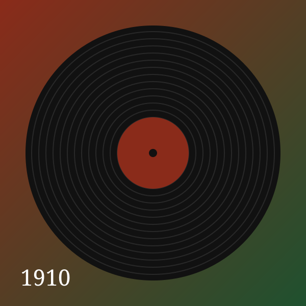

Tashjian Brothers, “Tashnagtsagan Khump” (Columbia E665-4962, 1910)

Background: A useful later Armenian-language text witness appears in Armenian National Songs, second edition (Armenian Youth Federation of America, 1962), contents p. 1 and song text/commentary around pp. 7–8 (PDF pages/printed pagination should be checked against the physical edition). It includes a song titled “Dashnagtsagan Khoumb” and describes the song as telling of Armenian Revolutionary Federation fedayi bands fighting in Sassoun under Antranik's leadership.